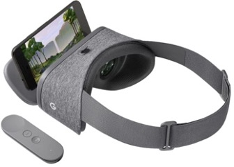

Course Overview
In this hands-on course, you will dive into the core technologies shaping the future: Virtual Reality (VR), Augmented Reality (AR), and Mixed Reality (MR) – collectively called eXtended Reality (XR). Students will gain hands-on experience with cutting-edge hardware and software tools while examining the technical, perceptual, and experiential foundations of immersive environments. We will traverse a landscape that includes 3D interaction, spatial computing, human-centered design, and real-world applications spanning science, education, art, and industry. Whether through a headset or a handheld device, you’ll learn to bridge physical and digital worlds, crafting experiences that inform, inspire, and transform. This isn't just about learning to code; it's about becoming an architect of perception and designing the next frontier of how we play, work, and connect.
Course Learning Objectives:
- Describe the theoretical foundations and historical evolution of VR, AR, and MR technologies.
- Implement interactive immersive applications using modern development frameworks (e.g., Unity, Google Cardboard, WebXR, ARCore/ARKit).
- Compare the capabilities and limitations of head-mounted displays, handheld devices, and large-scale immersive systems.
- Design effective 3D user interfaces that support natural interaction and spatial awareness.
- Critically evaluate immersive experiences for usability, accessibility, and ethical implications.
- Explore UIC’s CAVE pioneer immersive visualization facility.
Instructor & TA Information
Instructor
Saeed Boorboor
Webpage: saeedboorboor.github.io
Email: boorboor [AT] uic.edu
Office Hours: Tues & Thurs 4:00 - 5:00 p.m. (CDLRC 5432)
Teaching Assistant
TBD
Course Content Resources
There is no official textbook, but the course content is inspired by the following books:
- Virtual Reality by Steven M. LaValle. Cambridge University Press, 2017. (Available for free at http://lavalle.pl/vr/)
- The VR Book: Human-Centered Design for Virtual Reality by Jason Jerald. Association for Computing Machinery, 2015.
- 3D User Interfaces: Theory and Practice, 2nd Edition by J. LaViola Jr., et al. Addison-Wesley, 2017.
- Augmented Reality: Principles and Practice by D. Schmalstieg and T. Höllerer. Addison-Wesley, 2016.
Additional reading materials will be announced online and in class.
Syllabus and Schedule
| Date | Topic | Readings |
|---|---|---|
| Aug 26 | Introduction to AR/VR/MR | SL Ch. 1-2 |
| Aug 28 | Unity Tutorial I (working with Unity and deploying projects) | |
| Sept 2 | "Immersion, Presence, and Reality" | VR Ch. 4 |
| Sept 4 | Geometry & Transformations | SL Ch. 3.1-3.3 |
| Sept 9 | Geometry & Transformations (cont.) | SL Ch. 3.1-3.3 |
| Sept 11 | Unity Tutorial II (practicing geometry and transformations) | |
| Sept 16 | Viewing and Projections | SL Ch. 3.4-3.5 |
| Sept 18 | Viewing and Projections (cont.) | SL Ch. 3.4-3.5 |
| Sept 23 | Interaction and 3D User Interfaces: Introduction | SL Ch. 10.1, 10.3-10.5 (JL Ch. 6-9, VR Ch. 25-26) |
| Sept 25 | Assignment 1 Presentation and Grading | |
| Sept 30 | Interaction and 3D User Interfaces: Selection | SL Ch. 10.1, 10.3-10.5 (JL Ch. 6-9) |
| Oct 2 | Interaction and 3D User Interfaces: Manipulation | SL Ch. 10.1, 10.3-10.5 (JL Ch. 6-9) |
| Oct 7 | Interaction and 3D User Interfaces: Navigation | SL Ch. 10.2 (JL Ch. 6-9, DS Ch. 8) |
| Oct 9 | Exam I | |
| Oct 14 | Light and Optics | SL Ch. 4.1-4.4 |
| Oct 16 | Assignment 2 Presentation and Grading | |
| Oct 21 | Physiology of Human Vision | SL Ch. 5, 6.3 |
| Oct 23 | Visual Perception: Depth | SL Ch. 6.1 |
| Oct 28 | Visual Perception: Motion | SL Ch. 6.2 |
| Oct 30 | Fundamentals of Augmented Reality | (DS 1-2) |
| Nov 4 | Unity Tutorial III (AR Foundation) | SL Ch. 9 |
| Nov 6 | Fundamentals of Augmented Reality (cont.) | (DS 1-2) |
| Nov 11 | Tracking and Mapping | SL Ch. 9 |
| Nov 13 | Tracking and Mapping (cont.) | |
| Nov 18 | Immersive Analytics | |
| Nov 20 | Non-visual senses in XR | SL Ch. 11, 13 |
| Nov 25 | Assignment 3 Presentation and Grading | |
| Nov 27 | THANKSGIVING BREAK | |
| Dec 2 | Evaluating XR Systems and Experiences | SL Ch. 12 |
| Dec 4 | Exam II |
*SL = VIRTUAL REALITY by Steve LaValle.; JL= Joseph LaViola et al., 3D User Interfaces: Theory and Practice, 2nd Edition (recommended reading); DS= Dieter Schmalstieg, Augmented Reality: Principles and Practice (recommended readings); VR = The VR Book: Human-Centered Design for Virtual Reality
Assignments
There will be three assignments plus one warm-up assignment. Each of the main assignments is worth 20% of the final grade, except Assignment 0, which is worth 5% of the final grade.
- Assignment 0: Unity 3D warm-up (5% of final grade)
- Assignment 1: Basic VR
- Assignment 2: 3D User Interfaces
- Assignment 3: Augmented Reality
Assignments Schedule:
- Assignment 0: will be released on the first day of class. You will automatically receive full points on submission. While it will not be checked, you must attempt it fully and consult with the TA if you have any questions to prepare for future assignments.
- Assignment 1: Released on Sept 2, graded in class on Sept 25.
- Assignment 2: Released on Sept 25, graded in class on Oct 16.
- Assignment 3: Released on Oct 30, graded in class on Nov 18.
In addition to in-class evaluation, the students are expected to submit an assignment report by 11.59 p.m. Central Time on the same day as the assigned in-class date.
Hardware & Software Requirements
Hardware
Each student is required to have the following hardware:
- A programmable smartphone or tablet (Android 6.0+ or iOS 13.0+).
- A basic headset that will hold your smartphone (or tablet), such as Google Cardboard (available online on Amazon or any online store). Additionally, you may want to consider VR headsets with phone inserts (such as the Google Daydream) that are more sturdy than a Google Cardboard.
- For Assignment 2, a VR gamepad controller. Suggested: VR Empire Game Controller

Google Cardboard

Google Daydream

VR Controller
You may search online for alternatives, but it is strongly advised that you carefully check the compatibility information (such as application platform and Bluetooth version) of the devices before making a purchase.
Please consult the course instructor if you need financial help with purchasing the equipment.
Software

The software environment for all your assignments is Unity. Unity is a cross-platform open-source game engine developed by Unity Technologies; as of today, it supports more than 19 platforms. Unity can be used to create both three-dimensional (3D) and two-dimensional (2D) games and virtual reality (VR) environments, as well as simulations or emulations for its many platforms, including hand-held, head-worn, stationary displays, and desktops. The basic version of Unity is free and sufficient for all assignments.
In Assignment 3, Augmented Reality (AR), the surrounding real world is overlaid with computer-generated imagery. To support AR, Unity’s AR Foundation will be used. It is a framework for AR application development in various mobile environments. It uses computer vision technology to recognize and track in real-time 3D simple objects and image targets, enabling the registration of the real world and virtual objects. AR Foundation enables the development of applications in both iOS and Android and is easily portable to both platforms.
Assignment 0 (with 5% credit) is a basic assignment in Unity, a mini tutorial for Unity, just to get you started. Assignment 0 is already available; you can start working on it now. Unity tutorial sessions are scheduled during class time, as outlined in the syllabus schedule.
Grading
- Assignments (3x20% + 1x5%): 65%
- Exams (2x15%): 30%
- Attendance + Class Participation: 5%
Letter grades will be based on a straight scale using the following thresholds for grade cut-offs: A ranges from 85-100%, B ranges from 75-84.9%, C ranges from 70-74.9%, D ranges from 60-69.9%, and F for 59.9% or lower. However, strong attendance and participation may be taken into account in borderline situations, allowing a slightly lower percentage (e.g., 74.75%) to be rounded up.
Under no circumstances will grades be adjusted down. You can use this straight grading scale as an indicator of your minimum grade in the course at any time during the course. You should keep track of your own points so that at any time during the semester you may calculate your minimum grade based on the total number of points possible at that particular time. If and when, for any reason, you have concerns about your grade in the course, please see me in during my office hours so that we can discuss study techniques or alternative strategies to help you.
You have two weeks after each grade is released to raise any concerns or questions regarding their marks. Beyond this two-week window, no further inquiries or revisions to the grade will be considered.
Course Policies
The student is responsible for all the material mentioned in class (either by the instructor or during discussions) and all the assigned readings announced in class and/or listed online. Therefore, students are expected to attend every class. If you miss one class, please talk to those who attended to catch up with the course material. Note that additions or changes may be announced in class and will be updated on the course webpage. All the course material will be on the course website INSERT and on Blackboard, as will be announced from time to time. Class announcements will be communicated via email and found on the course webpage.Assignments Late Submission Policy
Requests for assignment extensions will not be considered. If you are unable to complete your assignment by the in-class presentation, it will be your responsibility to arrange a grading session with the TA during their office hours. You are, however, granted two “1-week extension” passes. This means that if you submit your assignment for evaluation up to one week after the original due date, you may use one pass to avoid a late submission penalty. These passes can also be used consecutively, allowing you to have your assignment evaluated up to two weeks after the in-class presentation. If you choose not to use a pass or exhaust your available passes, a penalty of 2% will be deducted for each week of delayed submission during office hours. Additionally, please note that you cannot claim your pass later in the semester for an assignment that has already been evaluated and penalized for late submission.
Academic Integrity
UIC is an academic community committed to providing an environment in which research, learning, and scholarship can flourish and in which all endeavors are guided by academic and professional integrity. In this community, all members, including faculty, administrators, staff, and students alike, share the responsibility to uphold the highest standards of academic honesty and quality of academic work so that such a collegial and productive environment exists.
As a student and member of the UIC community, you are expected to adhere to the Community Standards of integrity, accountability, and respect in all of your academic endeavors. When accusations of academic dishonesty occur, the Office of the Dean of Students investigates and adjudicates suspected violations of this student code. Unacceptable behavior includes cheating, unauthorized collaboration, fabrication or falsification, plagiarism, multiple submissions without instructor permission, using unauthorized study aids, coercion regarding grading or evaluation of coursework, and facilitating academic misconduct. Please review the UIC Student Disciplinary Policy for additional information about the process by which instances of academic misconduct are handled towards the goal of developing responsible student behavior.
By submitting your assignments for grading, you acknowledge these terms, you declare that your work is solely your own, and you promise that, unless authorized by the instructor or proctor, you have not communicated with anyone in any way during an exam or other online assessment. Let's embrace what it means to be a UIC community member and together be committed to the values of integrity.
Our class will follow the CS Code of Conduct. If you are not adhering to our course norms, a case of behavior misconduct will be submitted to the Dean of Students and to the Director of Undergraduate Studies in the department of Computer Science. If you are not adhering to our course norms, you will not get full credit for your work in this class. For extreme cases of violating the course norms, credit for the course will not be given. All the work you submit must be your own; you should not use paraphrasing software like (QuillBot), or AI software for writing (like ChatGPT), or any AI tool for code generation to solve assignments – unless explicitly allowed to do so. If in doubt about a specific tool, ask.
Inclusive Learning Environment
UIC values diversity and inclusion. Regardless of age, disability, ethnicity, race, gender, gender identity, sexual orientation, socioeconomic status, geographic background, religion, political ideology, language, or culture, we expect all members of this class to contribute to a respectful, welcoming, and inclusive environment for every other member of our class. If there are aspects of the instruction or design of this course that result in barriers to your inclusion, engagement, accurate assessment or achievement, please notify me as soon as possible.
Disability Accommodation
UIC is committed to full inclusion and participation of people with disabilities in all aspects of university life. If you face or anticipate disability-related barriers while at UIC, please connect with the Disability Resource Center (DRC) , via email at drc@uic.edu, or call (312) 413-2183 to create a plan for reasonable accommodations. In order to receive accommodations, you will need to disclose the disability to the DRC, complete an interactive registration process with the DRC, and provide me with a Letter of Accommodation (LOA). Upon receipt of a LOA, I will gladly work with you and the DRC to implement approved accommodations.
Religious Holidays
I will make every effort to avoid scheduling exams or requiring student projects be submitted on religious holidays. If you wish to observe your religious holidays, please notify me by the tenth day of the semester of the date when you will be absent unless the religious holiday is observed on or before the tenth day of the semester. In such cases, please notify me at least five days in advance of the date when you will be absent. I will make every reasonable effort to honor your request and not penalize you for missing the class. If an examination or project is due during your absence, you will be given an exam or assignment equivalent to the one completed by those students in attendance. Students may appeal through campus grievance procedures for religious accommodations.
Mental and Emotional Wellness
Counseling Services are available for all UIC students. You may seek free and confidential services from the Counseling Center at https://counseling.uic.edu/. The Counseling Center is located in the Student Services Building; you may contact them at (312) 996-3490 during normal business hours (M-F, 9 am -5 pm). If calling after hours, press 2 to be connected to a crisis counselor. In addition to offering counseling services, the Counseling Center also operates the InTouch Crisis Hotline from 6:00 p.m.-10:30 p.m. They offer support and referrals to callers, as well as telephone crisis interventions; please call (312) 996-5535.
Campus Advocacy Network
The Campus Advocacy Network provides information and offers resources to all UIC students, faculty, and staff. Under the Title IX law you have the right to an education that is free from any form of gender-based violence and discrimination. Crimes of sexual assault, domestic violence, sexual harassment, and stalking are against the law and can be prevented. For more information or for confidential victim-services and advocacy, contact UIC's Campus Advocacy Network at 312-413-1025 or visit http://can.uic.edu/. To make a report to UIC's Title IX office, email TitleIX@uic.eduor call (312) 996-5657.